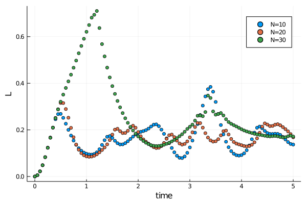

DQPT in the Ising model(@id demo_dqpt)
In this tutorial we will try to reproduce the results from this paper. The needed packages are
using MPSKit, MPSKitModels, TensorKitDynamical quantum phase transitions (DQPT in short) are signatures of equilibrium phase transitions in a dynamical quantity - the loschmidth echo. This quantity is given by $L(t) = \frac{-2}{N} ln(| < \psi(t) | \psi(0) > |)$ where $N$ is the system size. One typically starts from a groundstate and then quenches the hamiltonian to a different point. Non analycities in the loschmidth echo are called 'dynamical quantum phase transitions'.
In the mentioned paper they work with
$H(g) = - \sum^{N-1}_{i=1} \sigma^z_i \sigma^z_{i+1} + g \sum_{i=1}^N \sigma^x_i$
and show that divergences occur when quenching across the critical point (g₀ → g₁) for $t^*_n = t^*(n+\frac{1}{2})$ with $t^* = \pi/e(g_1,k^*)$, $cos(k^*) = (1+g_0 g_1) / (g_0 + g_1)$, $e(g,k) = \sqrt{(g-cos k)^2 + sin^2 k}$.
The outline of the tutorial is as follows. We will pick $g₀ = 0.5$, $g₁ = 2.0$, and perform the time evolution at different system sizes and compare with the thermodynamic limit. For those $g$ we expect non-analicities to occur at $t_n ≈ 2.35 (n + 1/2)$.
First we construct the hamiltonian in mpo form, and obtain the pre-quenched groundstate:
H₀ = transverse_field_ising(; g=-0.5)
L = 20
ψ₀ = FiniteMPS(rand, ComplexF64, L, ℂ^2, ℂ^10)
ψ₀, _ = find_groundstate(ψ₀, H₀, DMRG());┌ Info: DMRG iteration:
│ iter = 1
│ ϵ = 0.0020961633753540897
│ λ = -20.400216273406606 + 8.422766878640786e-16im
└ Δt = 0.536897639
┌ Info: DMRG iteration:
│ iter = 2
│ ϵ = 1.9324532268037547e-6
│ λ = -20.400217866998595 - 1.2632476413240967e-15im
└ Δt = 0.320009526
┌ Info: DMRG iteration:
│ iter = 3
│ ϵ = 4.883113394407934e-7
│ λ = -20.400217867025678 - 3.206562451130956e-15im
└ Δt = 0.064756649
┌ Info: DMRG iteration:
│ iter = 4
│ ϵ = 6.335026911022001e-10
│ λ = -20.400217867025653 - 3.741871084156128e-17im
└ Δt = 0.014713191
┌ Info: DMRG iteration:
│ iter = 5
│ ϵ = 6.289053913528775e-13
│ λ = -20.400217867025678 - 2.632644424352837e-16im
└ Δt = 0.008818727
┌ Info: DMRG summary:
│ ϵ = 2.0e-12
│ λ = -20.400217867025678 - 2.632644424352837e-16im
└ Δt = 0.980341265
Finite MPS quenching
We can define a helper function that measures the loschmith echo
echo(ψ₀::FiniteMPS, ψₜ::FiniteMPS) = -2 * log(abs(dot(ψ₀, ψₜ))) / length(ψ₀)
@assert isapprox(echo(ψ₀, ψ₀), 0, atol=1e-10)We will initially use a two-site TDVP scheme to dynamically increase the bond dimension while time evolving, and later on switch to a faster one-site scheme. A single timestep can be done using
H₁ = transverse_field_ising(; g=-2.0)
ψₜ = deepcopy(ψ₀)
dt = 0.01
ψₜ, envs = timestep(ψₜ, H₁, dt, TDVP2(; trscheme=truncdim(20)));"envs" is a kind of cache object that keeps track of all environments in ψ. It is often advantageous to re-use the environment, so that mpskit doesn't need to recalculate everything.
Putting it all together, we get
function finite_sim(L; dt=0.05, finaltime=5.0)
ψ₀ = FiniteMPS(rand, ComplexF64, L, ℂ^2, ℂ^10)
ψ₀, _ = find_groundstate(ψ₀, H₀, DMRG())
ψₜ = deepcopy(ψ₀)
envs = environments(ψₜ, H₁)
echos = [echo(ψₜ, ψ₀)]
times = collect(0:dt:finaltime)
for t in times[2:end]
alg = t > 3 * dt ? TDVP() : TDVP2(; trscheme=truncdim(50))
ψₜ, envs = timestep(ψₜ, H₁, dt, alg, envs)
push!(echos, echo(ψₜ, ψ₀))
end
return times, echos
endfinite_sim (generic function with 1 method)
Infinite MPS quenching
Similarly we could start with an initial infinite state and find the pre-quench groundstate:
ψ₀ = InfiniteMPS([ℂ^2], [ℂ^10])
ψ₀, _ = find_groundstate(ψ₀, H₀, VUMPS());┌ Info: VUMPS iteration:
│ iter = 1
│ ϵ = 0.12051227031956392
│ λ = -1.0188109913987968 - 3.4277346718849837e-17im
└ Δt = 0.044219456
┌ Info: VUMPS iteration:
│ iter = 2
│ ϵ = 0.0005804392121373009
│ λ = -1.0635439538780795 - 8.36203471080629e-18im
└ Δt = 0.007141174
┌ Info: VUMPS iteration:
│ iter = 3
│ ϵ = 1.8720667377867497e-7
│ λ = -1.0635444099733329 + 9.033112781731065e-17im
└ Δt = 0.00646285
┌ Info: VUMPS iteration:
│ iter = 4
│ ϵ = 2.77487479109346e-10
│ λ = -1.0635444099733624 + 3.8230698255590467e-17im
└ Δt = 0.005835234
┌ Info: VUMPS iteration:
│ iter = 5
│ ϵ = 2.965633592874595e-11
│ λ = -1.0635444099733646 - 1.7021513375968543e-16im
└ Δt = 0.033198408
┌ Info: VUMPS iteration:
│ iter = 6
│ ϵ = 2.9750646414566318e-12
│ λ = -1.063544409973365 - 1.349628283023072e-16im
└ Δt = 0.004876971
┌ Info: VUMPS iteration:
│ iter = 7
│ ϵ = 3.154873820110237e-13
│ λ = -1.0635444099733644 - 2.0618524039270857e-17im
└ Δt = 0.004216146
┌ Info: VUMPS summary:
│ ϵ = 3.154873820110237e-13
│ λ = -1.0635444099733644 - 2.0618524039270857e-17im
└ Δt = 0.938766166
The dot product of two infinite matrix product states scales as $\alpha ^N$ where $α$ is the dominant eigenvalue of the transfer matrix. It is this $α$ that is returned when calling
dot(ψ₀, ψ₀)0.9999999999999984 + 9.734886193402987e-17imso the loschmidth echo takes on the pleasant form
echo(ψ₀::InfiniteMPS, ψₜ::InfiniteMPS) = -2 * log(abs(dot(ψ₀, ψₜ)))
@assert isapprox(echo(ψ₀, ψ₀), 0, atol=1e-10)This time we cannot use a two-site scheme to grow the bond dimension, as this isn't implemented (yet). Instead, we have to make use of the changebonds machinery. Multiple algorithms are available, but we will only focus on OptimalEpand(). Growing the bond dimension by $5$ can be done by calling:
ψₜ = deepcopy(ψ₀)
ψₜ, envs = changebonds(ψₜ, H₁, OptimalExpand(; trscheme=truncdim(5)));a single timestep is easy
dt = 0.01
ψₜ, envs = timestep(ψₜ, H₁, dt, TDVP(), envs);With performance in mind we should once again try to re-use these "envs" cache objects. The final code is
function infinite_sim(dt=0.05, finaltime=5.0)
ψ₀ = InfiniteMPS([ℂ^2], [ℂ^10])
ψ₀, _ = find_groundstate(ψ₀, H₀, VUMPS())
ψₜ = deepcopy(ψ₀)
envs = environments(ψₜ, H₁)
echos = [echo(ψₜ, ψ₀)]
times = collect(0:dt:finaltime)
for t in times[2:end]
if t < 50dt # if t is sufficiently small, we increase the bond dimension
ψₜ, envs = changebonds(ψₜ, H₁, OptimalExpand(; trscheme=truncdim(1)), envs)
end
(ψₜ, envs) = timestep(ψₜ, H₁, dt, TDVP(), envs)
push!(echos, echo(ψₜ, ψ₀))
end
return times, echos
endinfinite_sim (generic function with 3 methods)
This page was generated using Literate.jl.